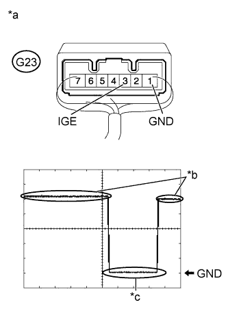

STEERING LOCK SYSTEM > Unable to Unlock Steering Wheel (Engine cannot Start) |

| Problem Symptom | Data List Item | Active Test Item |
| Unable to unlock steering wheel (Engine cannot start) | Entry&Start
| - |
| 1.CHECK DTC (ALL) |
Using the intelligent tester, confirm the output of DTCs for all systems.
|
| ||||
| OK | |
| 2.CHECK ENGINE SWITCH (SWITCH CONDITION) |
Check the power source mode change.
When the key is inside the vehicle and the shift lever is in P, check that pressing the engine switch with the brake pedal released causes the power source mode to change as follows:
|
| ||||
| OK | |
| 3.READ VALUE USING INTELLIGENT TESTER (UNLOCK REQUEST RECEIVE) |
Use the Data List to check if the steering lock command is functioning properly.
| Tester Display | Measurement Item/Range | Normal Condition | Diagnostic Note |
| Unlock Request Receive | Reception state of steering unlock command signal determined by certification ECU and sent to ID code box/NG or OK
| OK: Within 10 seconds of turning engine switch on (IG) or on (ACC) or starting engine NG: Except above | When 10 seconds or more elapse after the signal is received, the item changes to "NG". |
|
| ||||
| OK | |
| 4.CHECK HARNESS AND CONNECTOR (STEERING LOCK ECU - BATTERY AND BODY GROUND) |
Disconnect the G23 steering lock ECU connector.
Measure the resistance and voltage according to the value(s) in the table below.
| Tester Connection | Condition | Specified Condition |
| G23-1 (GND) - Body ground | Always | Below 1 Ω |
| Tester Connection | Condition | Specified Condition |
| G23-7 (B) - Body ground | Always | 11 to 14 V |
| *a | Front view of wire harness connector (to Steering Lock ECU) |
|
| ||||
| OK | |
| 5.INSPECT STEERING LOCK ECU (IGE VOLTAGE) |
Reconnect the G23 steering lock ECU connector.
|  |
Check the signal waveform according to the condition(s) in the table below.
| *a | Component with harness connected (to Steering Lock ECU) |
| *b | Steering lock motor not operating |
| *c | Steering lock motor operating |
| Item | Content |
| Tester Connection | G23-3 (IGE) - G23-1 (GND) |
| Tool Setting | 2 V/DIV., 200 ms./DIV. |
| Vehicle Condition | Steering lock motor not operating → Steering lock motor operating → Steering lock motor not operating |
|
| ||||
| OK | ||
| ||
| 6.READ VALUE USING INTELLIGENT TESTER (S CODE CHECK) |
Use the Data List to check if S code certification is functioning properly.
| Tester Display | Measurement Item/Range | Normal Condition | Diagnostic Note |
| S Code Check | Verification result between certification ECU and ID code box/NG or OK | OK: Verification result normal NG: Verification result abnormal | - |
|
| ||||
| OK | |
| 7.READ VALUE USING INTELLIGENT TESTER (L CODE CHECK) |
Use the Data List to check if L code certification is functioning properly.
| Tester Display | Measurement Item/Range | Normal Condition | Diagnostic Note |
| L Code Check | Verification result between ID code box and steering lock actuator assembly/NG or OK | OK: Verification result normal NG: Verification result abnormal | - |
|
| ||||
| OK | |
| 8.REPLACE STEERING LOCK ACTUATOR ASSEMBLY (STEERING LOCK ECU) |
Replace the steering lock actuator assembly (steering lock ECU) with a new one (Click here).
Perform the registration procedures (Refer to Service Bulletin for registration).
Turn the engine switch on (IG).
Operate the steering wheel and check the steering condition.
|
| ||||
| OK | ||
| ||
| 9.REPLACE CERTIFICATION ECU |
Replace the certification ECU with a new one.
Perform the registration procedures (Refer to Service Bulletin for registration).
Use the Data List to check if S code certification is functioning properly again.
| Tester Display | Measurement Item/Range | Normal Condition | Diagnostic Note |
| S Code Check | Verification result between certification ECU and ID code box/NG or OK | OK: Verification result normal NG: Verification result abnormal | - |
|
| ||||
| OK | ||
| ||
| 10.REPLACE STEERING LOCK ACTUATOR ASSEMBLY (STEERING LOCK ECU) |
Replace the steering lock actuator assembly (steering lock ECU) with a new one (Click here).
Perform the registration procedures (Refer to Service Bulletin for registration).
Use the Data List to check if L code certification is functioning properly again.
| Tester Display | Measurement Item/Range | Normal Condition | Diagnostic Note |
| L Code Check | Verification result between ID code box and steering lock actuator assembly/NG or OK | OK: Verification result normal NG: Verification result abnormal | - |
|
| ||||
| OK | ||
| ||